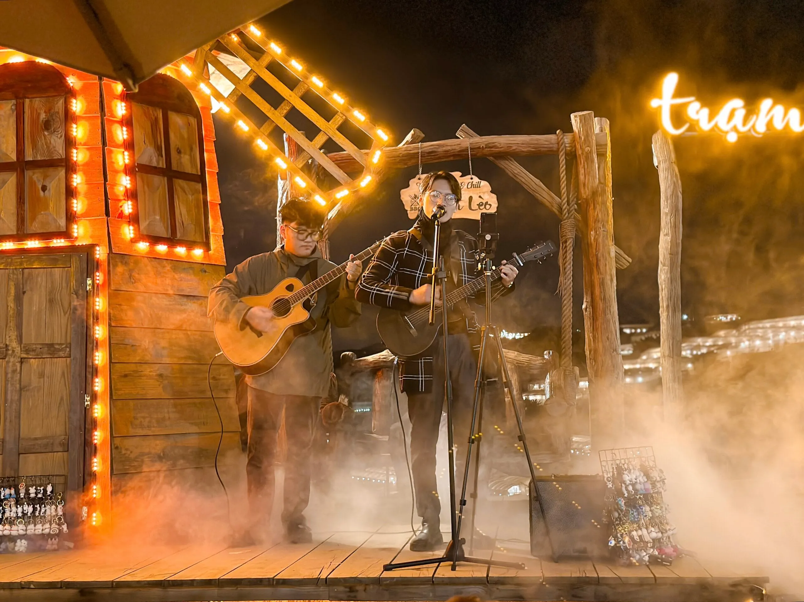

Quán nướng Đà Lạt nhất định phải thử khi du lịch đến đây

Mục lục bài viết
- 1. Tiệm Nướng & Chill Xóm Lèo – Quán nướng Đà Lạt kết hợp chill độc đáo
- 2. Không gian chill chuẩn Đà Lạt – Đặc trưng của quán nướng Đà Lạt được yêu thích nhất
- 3. Món nướng ngon, thực đơn đa dạng – linh hồn của mọi quán nướng Đà Lạt
- 4. Dịch vụ tận tâm – Điều làm nên sức hút của một quán nướng Đà Lạt chuẩn chill
- 5. Vì sao Tiệm Nướng & Chill Xóm Lèo là quán nướng Đà Lạt đáng ghé nhất?
- 6. Gợi ý lịch trình chill Đà Lạt trong ngày với quán nướng Đà Lạt này
- 7. Khách hàng nói gì về quán nướng Đà Lạt – Tiệm Nướng & Chill Xóm Lèo?
Đà Lạt từ lâu đã trở thành điểm đến mộng mơ của không chỉ giới trẻ mà cả những ai yêu thiên nhiên, thích khám phá và đam mê ẩm thực. Thành phố trên cao nguyên ấy mang trong mình không khí se lạnh, những rặng thông xanh ngắt và nét lãng mạn rất riêng mà hiếm nơi nào sánh bằng. Nhưng nếu chỉ có cảnh đẹp thôi thì chưa đủ. Đà Lạt còn chinh phục du khách bằng ẩm thực phong phú và độc đáo, trong đó các quán nướng Đà Lạt – đặc biệt là những nơi có không gian “chill” – luôn nằm trong danh sách những điểm đến không thể thiếu.
Và giữa những hàng trăm nơi vẫn có một nơi khiến người ta nhớ mãi ngay từ lần đầu ghé thăm: Tiệm Nướng & Chill Xóm Lèo. Đây không chỉ là một quán nướng ngon, mà còn là không gian hội tụ đủ cả 3 yếu tố: vị trí lý tưởng – không gian ấm cúng – món ăn tuyệt hảo.
1. Tiệm Nướng & Chill Xóm Lèo – Quán nướng Đà Lạt kết hợp chill độc đáo
Tọa lạc tại 113 Huỳnh Tấn Phát, Phường 11, TP. Đà Lạt, Tiệm Nướng & Chill Xóm Lèo đã dần trở thành điểm đến quen thuộc của không chỉ khách du lịch mà cả người dân địa phương khi nhắc đến quán nướng ở Đà Lạt. Từ trung tâm thành phố, bạn chỉ mất chưa đến 15 phút để đến được đây. Vị trí dễ tìm, nằm gần tuyến đường chính, lại có view xe lửa chạy ngang, tạo nên một khung cảnh vô cùng thi vị mà không phải quán nào cũng có được.

Vừa đặt chân đến quán, bạn sẽ cảm nhận được không khí rất khác biệt: mộc mạc, gần gũi và thư giãn. Quán được thiết kế theo phong cách “chill” đúng chuẩn Đà Lạt – không gian mở, nhiều cây xanh, ánh sáng vàng ấm áp. Từng chi tiết nhỏ như bàn ghế gỗ, đèn trang trí, những dây đèn lung linh hay góc sân nhỏ xinh đều được chăm chút kỹ lưỡng.
Quán không đơn thuần là nơi để ăn uống, mà còn là nơi để tận hưởng không khí, chia sẻ khoảnh khắc, giao lưu cảm xúc giữa những người bạn, người thân hay thậm chí là với chính mình.

📍 Địa chỉ: 113 Huỳnh Tấn Phát, Phường 11, Đà Lạt, Lâm Đồng
📩 Đặt Bàn: Tại Đây
📍 Google Map: Xem Chỉ Đường
📞 Hotline: 076.45.27.336 – 08.99.42.84.34 – 0902.91.22.40
2. Không gian chill chuẩn Đà Lạt – Đặc trưng của quán nướng Đà Lạt được yêu thích nhất

Tiệm Nướng & Chill Xóm Lèo luôn cố gắng trở thành một quán ăn hướng đến sự gần gũi, tự nhiên, phóng khoáng nhưng vẫn có điểm nhấn riêng. Không gian ở đây chia thành nhiều khu vực khác nhau, phù hợp với từng nhóm khách:
-
Khu trong nhà ấm cúng, thích hợp cho các buổi họp mặt gia đình, nhóm bạn nhỏ hoặc những cặp đôi muốn có không gian riêng tư.
-
Khu ngoài trời là điểm nhấn lớn nhất, nơi bạn có thể ngồi giữa tiết trời se lạnh của Đà Lạt, hít hà hương thơm từ bếp nướng tỏa ra, ngắm nhìn ánh đèn lấp lánh khi nhà lồng lên đèn và săn tàu lửa chạy ngang qua – rất chill, rất “Đà Lạt”.
Kết hợp với âm nhạc nhẹ nhàng, ánh sáng vàng dịu mắt và cách bày trí tối giản nhưng tinh tế, không gian của Tiệm Nướng & Chill Xóm Lèo thực sự là nơi lý tưởng để “trốn cả thế giới”.

3. Món nướng ngon, thực đơn đa dạng – linh hồn của mọi quán nướng Đà Lạt
Quán mang đến một thực đơn đa dạng với các món nướng phong phú, đảm bảo làm hài lòng ngay cả những thực khách khó tính nhất.
Thực đơn đặc sắc:
- Thịt nướng tươi ngon: Được tẩm ướp gia vị đậm đà, vừa miệng, thịt bò, gà, heo, và hải sản đều đạt chuẩn chất lượng.
- Món ăn kèm: Rau xanh, kim chi, và nước chấm đặc trưng giúp tăng hương vị cho bữa ăn.
- Thực đơn nướng đa dạng: Phù hợp cho nhóm bạn hoặc gia đình
- Món đặc biệt: Đừng quên thử những món nướng best seller của quán, chắc chắn sẽ khiến bạn ấn tượng.

4. Dịch vụ tận tâm – Điều làm nên sức hút của một quán nướng Đà Lạt chuẩn chill
Một điểm cộng rất lớn nữa của Tiệm Nướng & Chill Xóm Lèo chính là dịch vụ chuyên nghiệp và thân thiện. Từ khâu đặt bàn, gọi món đến phục vụ tại bàn – mọi thứ đều được thực hiện nhanh chóng, nhẹ nhàng và chu đáo.
Những điều bạn sẽ cảm nhận khi trải nghiệm tại đây:
-
Nhân viên luôn niềm nở, lịch sự, chủ động hỗ trợ khách khi cần.
-
Món ăn được chuẩn bị nhanh, không để khách phải chờ lâu dù quán đông.
-
Quán có hỗ trợ trang trí tiệc sinh nhật, kỷ niệm, liên hoan hoàn toàn miễn phí.
Tất cả tạo nên cảm giác thoải mái và được trân trọng – điều mà không phải quán nào cũng làm tốt.
5. Vì sao Tiệm Nướng & Chill Xóm Lèo là quán nướng Đà Lạt đáng ghé nhất?
✅ Vị trí dễ tìm, thuận tiện cho việc di chuyển từ trung tâm Đà Lạt.
✅ Không gian đặc sắc, chill, gần gũi thiên nhiên, thích hợp cả buổi tối lãng mạn lẫn tiệc tùng bạn bè.
✅ Món ăn chất lượng, giá cả hợp lý, phù hợp với mọi đối tượng từ học sinh, sinh viên đến dân văn phòng và du khách.
✅ Thái độ phục vụ chuyên nghiệp, tạo cảm giác gần gũi như đang ở nhà.

6. Gợi ý lịch trình chill Đà Lạt trong ngày với quán nướng Đà Lạt này
Nếu bạn đang lên kế hoạch cho một ngày “đậm chất Đà Lạt”, hãy thử theo lịch trình này:
Buổi sáng: Thưởng thức ly cà phê nóng tại một quán có view đẹp như Horizon Coffee, Tiệm Cafe Túi Mơ To hay The Married Beans.

Buổi trưa: Tham quan các địa điểm nổi tiếng như LangBiang, Đồi chè Cầu Đất hoặc Hồ Tuyền Lâm.
Chiều tối: Ghé Tiệm Nướng & Chill Xóm Lèo – nơi bạn có thể thưởng thức món nướng thơm lừng, vừa ăn vừa ngắm hoàng hôn buông xuống giữa tiết trời lành lạnh. Một trải nghiệm chill trọn vẹn từ vị giác đến cảm xúc.

7. Khách hàng nói gì về quán nướng Đà Lạt – Tiệm Nướng & Chill Xóm Lèo?
Không phải ngẫu nhiên mà Tiệm Nướng & Chill Xóm Lèo trở thành một trong những quán nướng “hot” nhất Đà Lạt. Hàng trăm đánh giá tích cực từ thực khách là minh chứng rõ ràng nhất:
🌟 “Đồ ăn ngon, không gian chill đúng kiểu Đà Lạt, phục vụ dễ thương cực kỳ. Mình đi 2 người mà ăn no say, giá lại ổn. Rất hài lòng!”
🌟 “Đi du lịch nhóm mà tìm được quán như này quá tuyệt. Có chỗ tổ chức sinh nhật nhỏ, không gian ấm cúng, nhân viên còn hỗ trợ trang trí. Sẽ quay lại lần sau!”
🌟 “Vừa ăn vừa nhìn tàu chạy ngang, cảm giác như đang ở châu Âu vậy. Chill thật sự. Món nào cũng ngon, đặc biệt là bò sốt tiêu và hải sản.”
Tiệm Nướng & Chill Xóm Lèo không chỉ đơn thuần là một quán nướng ở Đà Lạt, mà là nơi để bạn sống chậm lại, tận hưởng trọn vẹn từng khoảnh khắc bên người thân, bạn bè. Với không gian đặc sắc, món ăn ngon và dịch vụ tận tâm, nơi đây chắc chắn sẽ là một trong những điểm đến ấn tượng nhất trong hành trình khám phá Đà Lạt của bạn.
Hẹn gặp bạn tại TIỆM NƯỚNG & CHILL XÓM LÈO – Quán nướng Đà Lạt ngon & chill nhất thành phố!